먼저 생각해 보세요.
Ich habe etwas Neues gelernt. Neues는 왜 대문자로 시작하나요?
etwas, nichts 뒤의 형용사는 명사가 되어 대문자로 쓰고 -es를 붙여요.
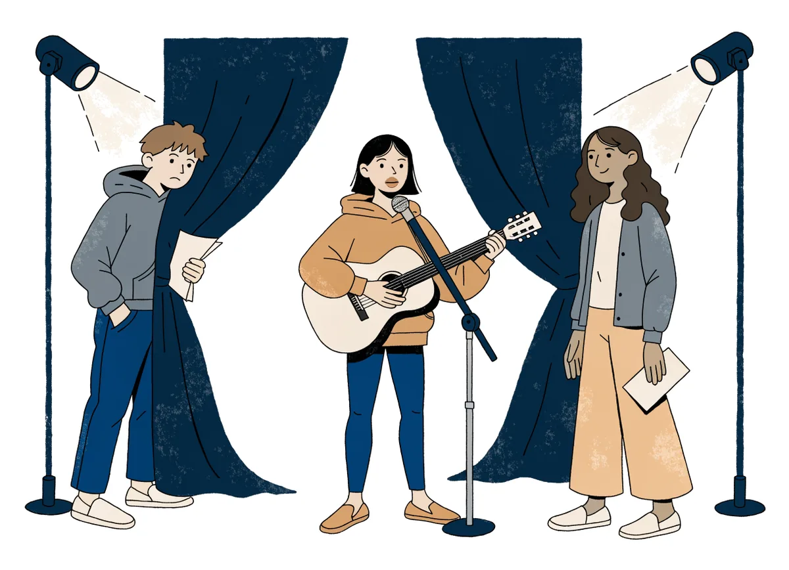
9b가 본(Bonn)에 있는 베토벤 생가에 다녀와요. 그다음 주에는 학교에서 문화의 밤 「Bühne frei!」가 열려요. Yuna는 직접 쓴 노래를 부르고, Lukas는 처음으로 무대에 서요.
눌러서 들어 보세요.
먼저 생각해 보세요.
Ich habe etwas Neues gelernt. Neues는 왜 대문자로 시작하나요?
etwas, nichts 뒤의 형용사는 명사가 되어 대문자로 쓰고 -es를 붙여요.
Lektion 3의 낱말 다섯 개를 다시 떠올려 보세요.
문법 Relativsätze im Genitiv (dessen, deren), Präteritum in Biografien, Adjektive als Nomen (der Deutsche, etwas Neues)
이 과를 마치면 공연과 전시를 소개하고, 예술가의 삶을 이야기하고, 감상문을 쓸 수 있어요.
9b가 본에 있는 베토벤 생가에 왔어요. 박물관 안내원이 설명해요.
들으면서 찾아보세요. 베토벤은 몇 년에 빈으로 갔나요?
다음 주 금요일 저녁, 학교에서 문화의 밤이 열려요. 무대 뒤에서 차례를 기다려요.
들으면서 찾아보세요. Lukas는 무대에서 무엇을 하나요?
두 대화를 듣고 답하세요.
Wo wurde Beethoven geboren?
Wie alt war Beethoven bei seinem ersten Konzert?
Beethoven konnte bis zum Ende gut hören.
Er verlor langsam sein Gehör.
Wann zog Beethoven nach Wien?
Was macht Yuna am Kulturabend?
Lukas hat vor seinem Auftritt Lampenfieber.
Frau Schneider는 Lukas가 대사를 잊으면 어떻게 하라고 하나요?
낱말 34개예요. 낱말이나 예문 앞의 단추를 누르면 소리가 나요. 명사는 der, die, das를 색으로 구분했어요.
der Künstler, die Künstler 예술가
Der Künstler malt große Bilder.그 예술가는 큰 그림을 그려요.
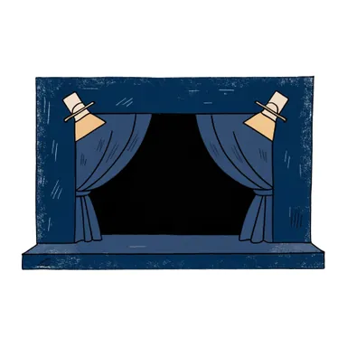
die Bühne, die Bühnen 무대
Yuna steht zum ersten Mal auf der Bühne.Yuna는 처음으로 무대에 서요.
das Theater, die Theater 극장, 연극
Am Samstag gehen wir ins Theater.토요일에 우리는 연극을 보러 가요.
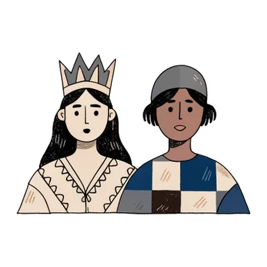
das Theaterstück, die Theaterstücke 연극 작품
Das Theaterstück dauert zwei Stunden.그 연극은 두 시간 걸려요.
die Rolle, die Rollen 역할
Emma spielt die Rolle der Lehrerin.Emma는 선생님 역을 맡아요.
die Aufführung, die Aufführungen 공연
Die Aufführung fängt um sieben an.공연은 일곱 시에 시작해요.
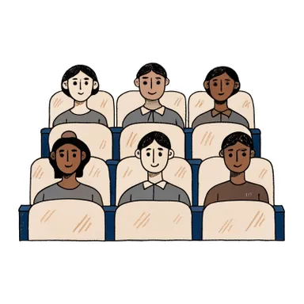
das Publikum 관객
Das Publikum klatscht lange.관객이 오래 손뼉을 쳐요.
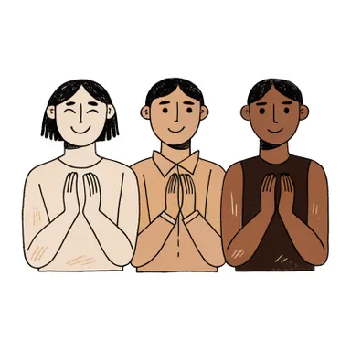
klatschen, hat geklatscht 손뼉 치다
Alle klatschen nach dem Lied.노래가 끝나자 모두 손뼉을 쳐요.
der Eintritt 입장, 입장료
Der Eintritt ist für Schüler frei.학생은 입장료가 없어요.
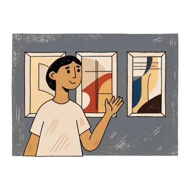
die Ausstellung, die Ausstellungen 전시회
Im Museum gibt es eine neue Ausstellung.박물관에서 새 전시회가 열려요.
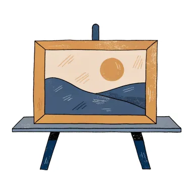
das Gemälde, die Gemälde 그림, 회화
Das Gemälde ist dreihundert Jahre alt.그 그림은 삼백 년 됐어요.
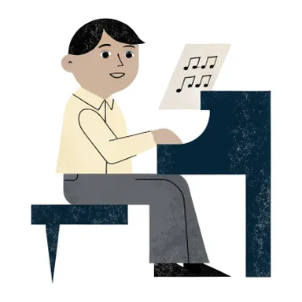
der Komponist, die Komponisten 작곡가
Beethoven war ein berühmter Komponist.베토벤은 유명한 작곡가였어요.
komponieren, hat komponiert 작곡하다
Er komponierte neun Sinfonien.그는 교향곡을 아홉 곡 썼어요.
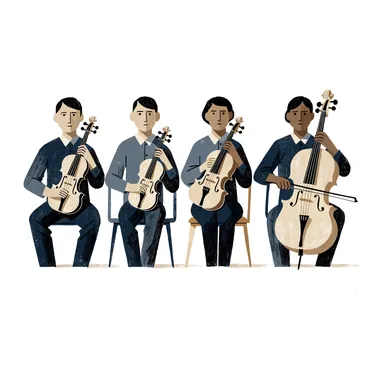
das Orchester, die Orchester 오케스트라
Das Orchester spielt Beethoven.오케스트라가 베토벤을 연주해요.
das Instrument, die Instrumente 악기
Welches Instrument spielst du?너는 무슨 악기를 다뤄?
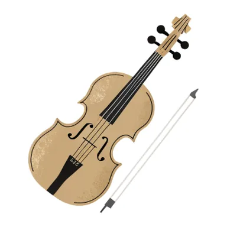
die Geige, die Geigen 바이올린
Meine Schwester spielt Geige.우리 언니는 바이올린을 켜요.
das Werk, die Werke 작품
Das ist sein bekanntestes Werk.그것이 그의 가장 유명한 작품이에요.
berühmt 유명한
Die Sängerin ist in Korea berühmt.그 가수는 한국에서 유명해요.
das Talent, die Talente 재능
Yuna hat Talent für Musik.Yuna는 음악에 재능이 있어요.
taub 귀가 들리지 않는
Beethoven war am Ende taub.베토벤은 나중에 귀가 들리지 않았어요.
die Biografie, die Biografien 전기, 일대기
Ich lese eine Biografie über Beethoven.나는 베토벤의 전기를 읽어요.
sterben, ist gestorben (du stirbst, er stirbt) 죽다, 세상을 떠나다
Beethoven starb in Wien.베토벤은 빈에서 세상을 떠났어요.
auftreten, ist aufgetreten (du trittst auf, er tritt auf) 무대에 서다, 공연하다
Die Band tritt heute Abend auf.그 밴드는 오늘 저녁에 공연해요.
der Auftritt, die Auftritte 무대에 서는 일, 공연
Mein Auftritt dauert fünf Minuten.내 무대는 5분이에요.
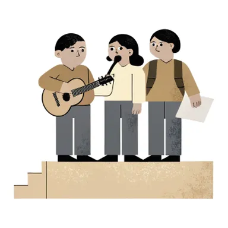
proben, hat geprobt (공연을) 연습하다
Wir proben jeden Dienstag.우리는 화요일마다 연습해요.
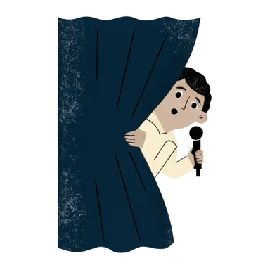
das Lampenfieber 무대에 서기 전의 떨림
Vor dem Auftritt habe ich Lampenfieber.무대에 서기 전에 나는 떨려요.
der Witz, die Witze 우스갯소리
Lukas erzählt gern Witze.Lukas는 웃긴 이야기를 즐겨 해요.
beeindrucken, hat beeindruckt 깊은 인상을 주다
Das Konzert hat mich beeindruckt.그 연주회는 나에게 깊은 인상을 줬어요.
die Kritik, die Kritiken 평, 비평
Die Kritik in der Zeitung war gut.신문에 실린 평이 좋았어요.
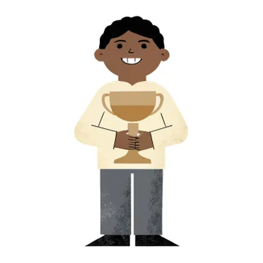
gewinnen, hat gewonnen 이기다, (상을) 받다
Unsere Band hat einen Preis gewonnen.우리 밴드가 상을 받았어요.
das Jahrhundert, die Jahrhunderte 세기, 백 년
Das Lied ist aus dem letzten Jahrhundert.그 노래는 지난 세기에 나왔어요.
der Erwachsene, die Erwachsenen 어른
Die Erwachsenen sitzen in der ersten Reihe.어른들은 첫 줄에 앉아요.
der Deutsche, die Deutschen 독일 사람
Mein Lehrer ist Deutscher.우리 선생님은 독일 사람이에요.
der Bekannte, die Bekannten 아는 사람
Ein Bekannter von mir spielt im Orchester.내가 아는 사람이 오케스트라에서 연주해요.
이 과의 낱말로 여덟 문제를 풀어요.
예문을 보고 답해 보세요.
Das ist die Sängerin, … Lieder ich mag. 빈칸에 알맞은 말은 무엇인가요?
규칙
'그 사람의', '그것의'라는 뜻으로 관계문을 이을 때 dessen과 deren을 써요. 앞의 명사가 남성이나 중성이면 dessen, 여성이나 복수이면 deren이에요. 바로 뒤에는 관사 없이 명사가 와요.
| 앞의 명사 | 보기 |
|---|---|
| 남성, 중성: dessen | der Komponist, dessen Musik ich mag |
| 여성, 복수: deren | die Sängerin, deren Lieder ich mag |
주의 dessen과 deren은 뒤에 오는 명사에 따라 바뀌지 않아요. der Mann, dessen Tochter. der Mann, dessen Kinder.
예문을 보고 답해 보세요.
Er zog nach Wien. zog의 원형은 무엇인가요?
규칙
사람의 일생을 글로 쓸 때는 Präteritum을 써요. 규칙 동사는 -te를 붙이고, 불규칙 동사는 모양이 바뀌어요. '태어났다'는 wurde … geboren이라고 써요.
| 원형 | Präteritum |
|---|---|
| geboren werden | er wurde geboren |
| ziehen | er zog |
| verlieren | er verlor |
| sterben | er starb |
| komponieren | er komponierte |
주의 일대기에는 때를 나타내는 말이 자주 나와요. im Jahr 1792, mit sieben Jahren, als Kind, später.
예문을 보고 답해 보세요.
nichts Besonderes. Besonderes의 끝에는 무엇이 붙었나요?
규칙
형용사를 명사로 쓸 수 있어요. 첫 글자를 대문자로 쓰고, 어미는 형용사와 똑같이 붙여요. etwas, nichts, viel 뒤에서는 -es가 붙어요.
| 보기 | |
|---|---|
| 사람 | der Deutsche, ein Deutscher, die Deutschen |
| etwas, nichts | etwas Neues, nichts Besonderes |
| das + 최상급 | das Beste, das Schönste |
주의 der Jugendliche, der Erwachsene, der Bekannte도 형용사에서 온 명사예요. 그래서 ein Jugendlicher, ein Erwachsener, ein Bekannter가 돼요.
무대가 끝난 뒤 Elif가 Yuna에게 물어요. 듣고 답하세요.
Nach dem Auftritt
Elif Yuna, dein Lied hat das Publikum sehr beeindruckt. Wie fühlst du dich?
Yuna Glücklich! Vor dem Auftritt hatte ich Lampenfieber, aber auf der Bühne war es weg.
Elif Worum geht es in dem Lied?
Yuna Es geht um ein Mädchen, dessen Familie weit weg ist. Das Mädchen bin ich.
Elif Und was war das Beste an diesem Abend?
Yuna Lukas! Er hat seinen Text vergessen und dann etwas sehr Lustiges gesagt. Alle haben geklatscht.
Wie fühlt sich Yuna nach dem Auftritt?
Worum geht es in Yunas Lied?
Yuna hatte auf der Bühne Lampenfieber.
Auf der Bühne war das Lampenfieber weg.
Lukas는 대사를 잊은 뒤에 어떻게 했나요?
듣고 알맞은 것을 고르세요.
청소년은 입장료를 얼마 내나요?
Der Eintritt kostet fünf Euro. Für Jugendliche ist er frei.
Lukas네는 어제 무엇을 했나요?
Das ist der Musiker, dessen Konzert wir gestern gesehen haben.
Emma는 오늘 어떻게 지냈나요?
Heute habe ich nichts Besonderes gemacht.
Clara Schumann은 몇 살에 첫 연주회를 열었나요?
Clara Schumann wurde in Leipzig geboren. Mit neun Jahren gab sie ihr erstes Konzert.
음악가 Clara Schumann의 일대기예요. 읽고 답하세요.
Clara Schumann
Clara Schumann wurde 1819 in Leipzig geboren. Ihr Vater, dessen Beruf Klavierlehrer war, gab ihr schon als kleines Kind Unterricht.
Mit neun Jahren gab sie ihr erstes Konzert. Bald war sie in ganz Europa berühmt.
1840 heiratete sie den Komponisten Robert Schumann. Sie bekamen acht Kinder.
Clara komponierte auch selbst und gab mehr als tausend Konzerte.
Sie starb 1896 in Frankfurt am Main. Sie war eine der bekanntesten Musikerinnen des 19. Jahrhunderts.
Wo wurde Clara Schumann geboren?
Wer gab ihr Unterricht?
Mit neun Jahren gab sie ihr erstes Konzert.
Wie viele Kinder hatten Clara und Robert Schumann?
Clara Schumann은 어떤 일을 했나요?
문화의 밤 순서예요. 보고 답하세요.
Bühne frei!
| Uhrzeit | Wer? | Was? |
|---|---|---|
| 19:00 | Elif | Anfang |
| 19:10 | Yuna | Lied |
| 19:20 | Lukas | Witze |
| 19:35 | Theater-AG | Theaterstück |
| 20:15 | alle | Ende |
Wer tritt nach Yuna auf?
Das Theaterstück fängt um 19:35 an.
Wann ist der Abend zu Ende?
dessen과 deren이에요. 알맞은 말을 고르세요.
Das ist der Komponist, Musik ich mag.
내가 좋아하는 음악을 쓴 작곡가예요.
Das ist die Sängerin, Lieder alle kennen.
누구나 아는 노래를 부른 가수예요.
Das ist das Mädchen, Vater Musiker ist.
아버지가 음악가인 여자아이예요.
das Mädchen은 중성이라서 dessen이에요.
Die Schüler, Auftritt gut war, bekommen einen Preis.
무대를 잘한 학생들은 상을 받아요.
Yuna spielt ein Lied, Text sie selbst geschrieben hat.
Yuna는 직접 가사를 쓴 노래를 불러요.
Das ist die Künstlerin, Gemälde wir gesehen haben.
우리가 본 그림을 그린 예술가예요.
일대기의 Präteritum이에요. 알맞은 말을 고르세요.
Beethoven 1770 in Bonn geboren.
베토벤은 1770년 본에서 태어났어요.
Mit sieben Jahren er sein erstes Konzert.
일곱 살에 첫 연주회를 열었어요.
1792 er nach Wien.
1792년에 빈으로 옮겨 갔어요.
Er langsam sein Gehör.
그는 청력을 조금씩 잃었어요.
Trotzdem er weiter.
그래도 계속 곡을 썼어요.
Er 1827 in Wien.
1827년 빈에서 세상을 떠났어요.
명사로 쓰는 형용사예요. 알맞은 말을 고르세요.
Ich habe heute etwas gelernt.
나는 오늘 새로운 것을 배웠어요.
etwas 뒤의 형용사는 대문자로 쓰고 -es를 붙여요.
Im Kino gab es nichts .
영화관에는 특별한 것이 없었어요.
Mein Nachbar ist .
우리 이웃은 독일 사람이에요.
Das an dem Abend war die Musik.
그날 저녁에서 가장 좋았던 것은 음악이에요.
Die klatschen.
어른들이 손뼉을 쳐요.
Ein von mir spielt Geige.
내가 아는 사람이 바이올린을 켜요.
낱말을 순서대로 눌러 문장을 만드세요.
내가 좋아하는 음악을 쓴 작곡가야.
베토벤은 본에서 태어났어.
나는 새로운 것을 배웠어.
관객이 오래 손뼉을 쳐.
낱말과 뜻을 짝지으세요.
듣고 그대로 써 보세요.
Ich habe Lampenfieber. 나 떨려.
Das Publikum klatscht. 관객이 손뼉을 쳐.
Ich habe etwas Neues gelernt. 나는 새로운 것을 배웠어.
Am Freitag gibt es ein Konzert in unserer Schule. 금요일에 우리 학교에서 연주회가 있어.
Die Aufführung fängt um sieben an. 공연은 일곱 시에 시작해.
Der Eintritt ist frei. 입장료는 없어.
Es treten drei Bands auf. 밴드 세 팀이 공연해.
Er wurde in Bonn geboren. 그는 본에서 태어났어.
Mit sieben Jahren gab er sein erstes Konzert. 일곱 살에 첫 연주회를 열었어.
Später zog er nach Wien. 나중에 빈으로 옮겨 갔어.
Er starb in Wien. 그는 빈에서 세상을 떠났어.
Das Stück hat mich beeindruckt. 그 작품은 나에게 깊은 인상을 줬어.
Das Beste war die Musik. 가장 좋았던 건 음악이야.
Es war nichts Besonderes. 특별한 건 없었어.
Ich kann es nur empfehlen. 꼭 보라고 권해.
Bühne frei für Yuna! 다음 무대는 Yuna입니다!
Ich habe Lampenfieber. 나 떨려.
Viel Erfolg! 잘해!
대화 B에서 역할을 하나 고르세요. 상대의 말은 음성으로 나오고, 내 차례에는 직접 말해요.
본 공연이나 영화, 전시를 떠올리며 적으세요. 완성된 문장을 소리 내어 읽어 보세요.
Letzten Monat habe ich ein Konzert gesehen.
Es war in Seoul.
Das Beste war die Musik.
Der Abend war etwas Besonderes.
Meine Kritik
본 공연, 영화, 전시 가운데 하나를 골라 감상문을 써요. 여덟 문장쯤 써요.
Letzte Woche habe ich den Kulturabend der 9b gesehen. Die Aufführung war in unserer Schule und dauerte eine Stunde. Zuerst spielte Yuna ein Lied, dessen Text sie selbst geschrieben hat. Es geht um ein Mädchen, dessen Familie weit weg ist. Das Lied hat mich sehr beeindruckt. Das Beste war aber Lukas: Er vergaß seinen Text und sagte etwas sehr Lustiges. Nur das Theaterstück am Ende war ein bisschen zu lang. Ich kann den Abend nur empfehlen.
다 쓴 뒤에 확인해 보세요.
Ich kann eine Aufführung oder eine Ausstellung vorstellen.공연이나 전시를 소개할 수 있어요.
Ich kann vom Leben eines Künstlers erzählen.예술가의 삶을 이야기할 수 있어요.
Ich kann eine kurze Kritik schreiben.짧은 감상문을 쓸 수 있어요.